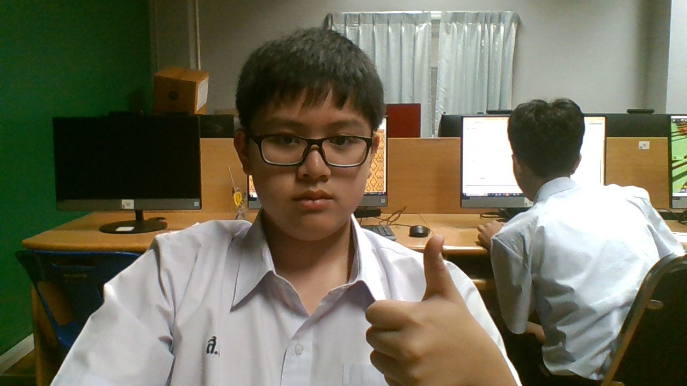

วันสุนทรภู่ กวีเอกของโลก
ประวัติสุนทรภู่แบบย่อ👨🦰
สุนทรภู่เป็นกระฏุมพีผู้ดีมีมีมิตรชาวบางกอก เกิดในวังหลัง ปากคลองบางกอกน้อย) เมื่อวันที่ 26 มิถุนายน พ.ศ.2329 ยุค ต้นแผ่นดินรัชกาลที่ 1 เมื่อเติบโตขึ้นเข้ารับราชการในวังหลวง เป็นนักปราชญ์ราชบัณฑิตประจำราชสำนักรัชกาลที่ 2 ต่อมาได้ ออกบวชในรัชกาลที่ 3 อยู่วัดเทพธิดาราม นานถึง 18 ปี (พ.ศ.2367-2385 อายุ 38-56 ปี) แล้วลาสึกมารับราชการในวังหน้ากับสมเด็จพระปิ่นเกล้าฯ (แต่อาศัยอยู่พระราชวังเดิม ธนบุรี) จนถึงแก่กรรมในรัชกาลที่ 4 เมื่อ พ.ศ. 2398 อายุ 69 ปี
ผลงานทั้งหมดของสุนทรภู่ (ตามที่มีหลักฐานปรากฏ)

ความสำคัญ และผลงานของสุนทรภู่🎇🎆 ผลงานสุนทรภู่ที่หลายคนรู้จักกันดีคือ "พระอภัยมณี" ซึ่งได้รับการยกย่องจากวรรณคดีสโมสรให้เป็นสุดยอดวรรณคดีไทยประเภทกลอนนิทาน และยังถูกนำไปแปลเป็นภาษาต่างประเทศอีกด้วย โดยใน พ.ศ. 2529 เป็นปีครบรอบวันเกิด 200 ปีของสุนทรภู่ ทางองค์การยูเนสโก (UNESCO) ได้ประกาศให้สุนทรภู่เป็น "บุคคลสำคัญของโลกทางด้านวรรณกรรม" ทำให้มีการจัดตั้งสถาบันสุนทรภู่เพื่อเผยแพร่ชีวิตและผลงานต่างๆ ให้คนรุ่นหลังได้ศึกษากัน

บทละครสอนใจ🎵 ตอน พระฤาษีสอนสุดสาครหลังจากสุดสาครถูกชีเปลือยผลักตกหน้าผา แย่งเอาม้านิลมังกรและไม้เท้ากายสิทธิ์ไป พระฤาษีก็ตามมาช่วยได้ทันจึงได้กล่าวสอนสุดสาครกลอนนี้สอนเรื่อง : ให้รู้จักระมัดระวังรอบคอบ รู้จักรักษาตัวให้พ้นจากภัยอันตราย เราไม่รู้เลยว่าใครคิดอย่างไรกับเรา การเรียนรู้ที่จะรับมือและเอาตัวรอดจึงเป็นสิ่งสำคัญ

จัดทำโดย
ด.ช.ณัฏฐพล ศรีสัตยากุล ม.203 7
